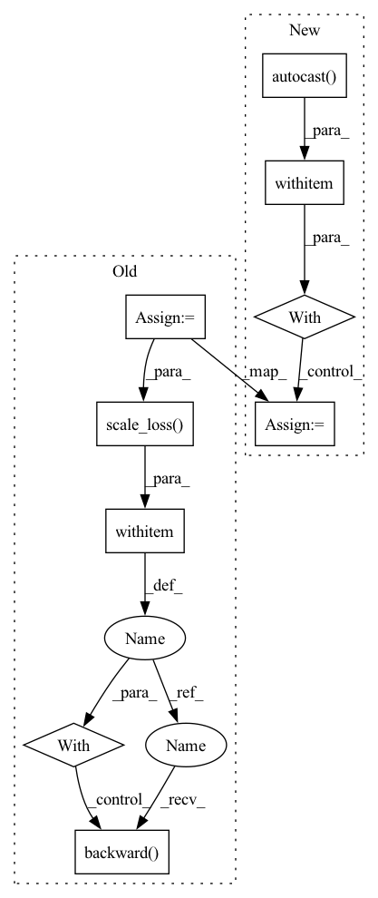

Pattern ID :4402
Before Change
targets.requires_grad = False
data_end_time = time.time()
outputs = self.model(inps, targets)
loss = outputs["total_loss"]
self.optimizer.zero_grad()
if self.amp_training:
with amp.scale_loss( loss, self.optimizer) as scaled_loss:
scaled_loss .backward()
else:
loss.backward()
self.optimizer.step()
After Change
targets.requires_grad = False
data_end_time = time.time()
with torch.cuda.amp.autocast(enabled=self.amp_training):
outputs = self.model(inps, targets)
loss = outputs["total_loss"]
self.optimizer.zero_grad()In pattern: SUPERPATTERN
Frequency: 3
Non-data size: 9
Instances Fragment ID: 16185348
Project Name: ifzhang/bytetrack
Commit Name: 6f8e09ade5b1d0324b75b7e151de4db4a44ca189
Time: 2021-09-14
Author: 953260160@qq.com
File Name: yolox/core/trainer.py
M Class Name: Trainer
N Class Name: Trainer
M Method Name: train_one_iter(1)
N Method Name: train_one_iter(1)
M Parent Class:
N Parent Class:
M File Name: yolox/core/trainer.py
N File Name: yolox/core/trainer.py
M Start Line: 98
M End Line: 107
N Start Line: 99
N End Line: 106
Before Change
targets.requires_grad = False
data_end_time = time.time()
outputs = self.model(inps, targets)
loss = outputs["total_loss"]
self.optimizer.zero_grad()
if self.amp_training:
with amp.scale_loss( loss, self.optimizer) as scaled_loss:
scaled_loss.backward()
else:
loss.backward()
self.optimizer.step()
After Change
inps, targets = self.exp.preprocess(inps, targets, self.input_size)
data_end_time = time.time()
with torch.cuda.amp.autocast(enabled=self.amp_training):
outputs = self.model(inps, targets)
loss = outputs["total_loss"]
Fragment ID: 16185349
Project Name: megvii-basedetection/yolox
Commit Name: c9fe0aae2db90adccc90f7e5a16f044bf110c816
Time: 2021-08-19
Author: ruinmessi@gmail.com
File Name: yolox/core/trainer.py
M Class Name: Trainer
N Class Name: Trainer
M Method Name: train_one_iter(1)
N Method Name: train_one_iter(1)
M Parent Class:
N Parent Class:
M File Name: yolox/core/trainer.py
N File Name: yolox/core/trainer.py
M Start Line: 99
M End Line: 108
N Start Line: 94
N End Line: 108
Before Change
optimizer.zero_grad()
data = self._fetch_from(dataset, rank, self.config.batch_train)
metrics = self.spec.train_objective(data, model)
loss = metrics["loss"]
if self.config.use_amp:
with amp.scale_loss( loss, optimizer) as scaled_loss:
scaled_loss.backward()
else:
loss.backward()
optimizer.step()After Change
data = self._fetch_from(dataset, rank, self.config.batch_train)
with amp.autocast(enabled=self.config.use_amp):
metrics = self.spec.train_objective(data, model)
loss = metrics["loss"]
if self.config.use_amp: Fragment ID: 16185347
Project Name: affjljoo3581/gpt2
Commit Name: 00ea99de92d8e8a849cf41c78317b074479d0569
Time: 2020-09-08
Author: affjljoo3581@gmail.com
File Name: src/gpt2/training/training.py
M Class Name: Trainer
N Class Name: Trainer
M Method Name: _train_step(7)
N Method Name: _train_step(6)
M Parent Class: object
N Parent Class: object
M File Name: src/gpt2/training/training.py
N File Name: src/gpt2/training/training.py
M Start Line: 166
M End Line: 175
N Start Line: 154
N End Line: 171